英文
英文刘谦（音译）等
编者按
照射在不透明介质上的激光有时会使介质对其他光线透明，这种现象称为电磁感应透明。介质的光学性质变化非常显著，以至于光脉冲可以被放慢和压缩许多个数量级。本文中，刘谦（音译）与其同事们报道了使用这种效应的实验，在这些实验中，他们使激光脉冲完全停滞在磁阱中的冷钠原子气团中。他们还展示了信息可冻结在原子介质中长达1微秒，然后恢复。刘谦与其同事们认为这种技术可以用于量子计算机和其他量子信息系统的开发。 英文
电磁感应透明[1-3]是一种量子干涉效应，它允许光在其他状态下非透明的原子介质中传播；“耦合”激光被用来产生必要的干涉，以实现从“探测”激光发出的共振脉冲的传输。这种技术[4-6]已经被用于减缓及空间压缩光脉冲达七个数量级之多，从而导致其在原子云内的完全局域化和容纳[4]。本文运用电磁感应透明来使激光脉冲在磁阱捕获的冷钠原子云中完全停止。在空间局域化脉冲区域内，原子处于由耦合激光场和探测激光场的振幅和相位所决定的叠加态。当突然关闭耦合激光时，压缩的探测光束会有效地停止；最初存储在激光场中的相干信息就被“冷冻”在原子介质中，最长可达1 ms。随后耦合激光被重新开启，探测脉冲便再次产生：所存储的相干信息被读取出来并转移回辐射场。本文提出了一个理论模型，揭示了该系统的自调节特征使得“读”和“写”操作过程中耗散损失最小。我们预期这种现象可以被应用于量子信息处理。 英文
通过实验中所使用的耦合和探测激光，原子被精确地建模为与两激光场相互作用的三能级原子（图1a）。在完全电磁感应透明（EIT）条件下（双光子共振），对于三能级原子和共振激光场组成的系统存在一稳定的本征态，其中原子处于态
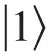
和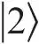
的相干叠加“暗”状态：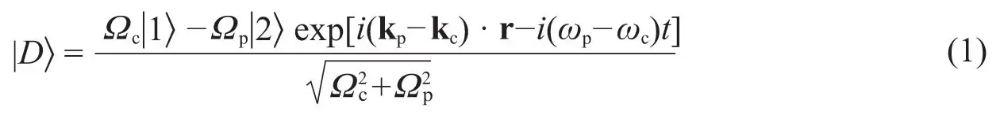
这里Ωp和Ωc分别为探测和耦合激光的拉比频率，kp和kc为波矢，ωp和ωc为光学角频率。拉比频率定义为Ωp,c≡eEp,c·r13,23 / ħ,，其中e为电子电荷，Ep,c为探测和耦合场振幅的缓慢变化包络，er13,23为原子跃迁的电偶极矩。暗态不会与辐射衰减态
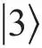
耦合，从而抵消了激光场的吸收[1-3]。 英文
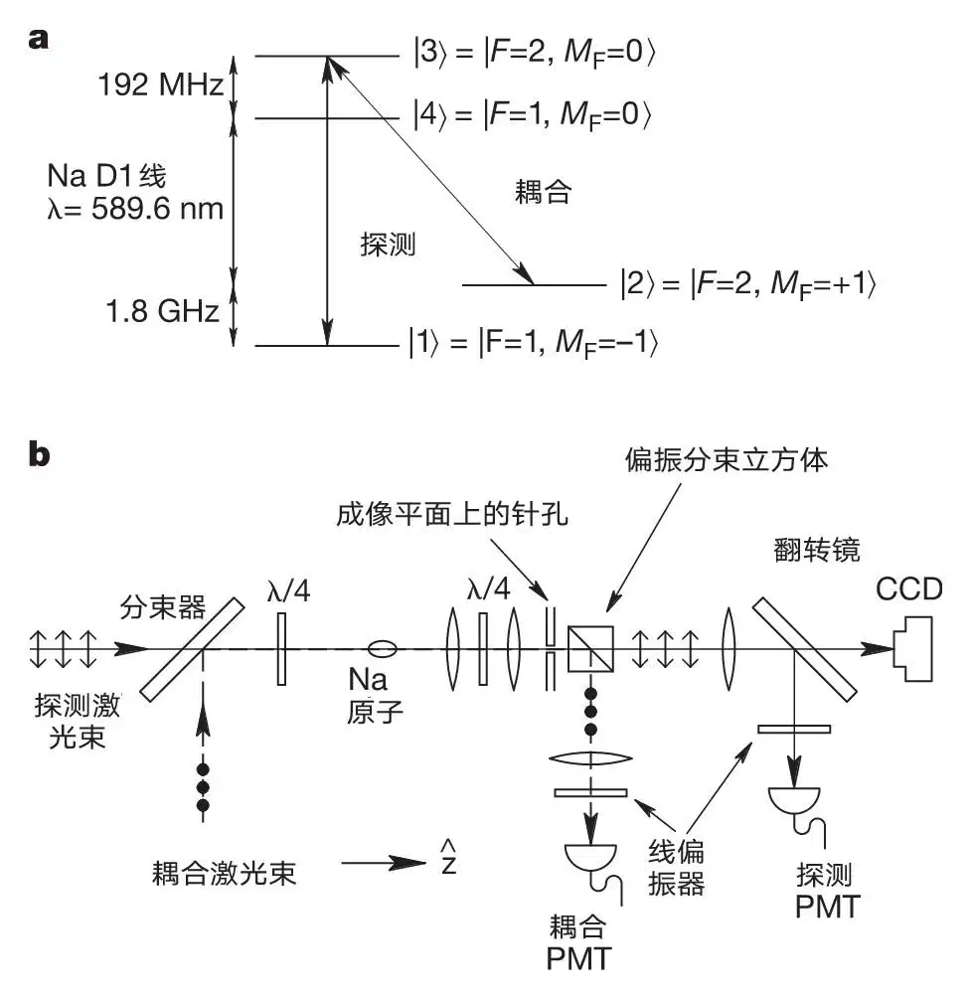
图1．实验装置和实验过程。a，量子态
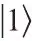
，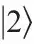
，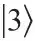
构成一个三能级EIT系统。被降温的原子最初被磁阱捕获于态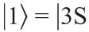
，F=1，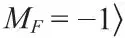
。探测和耦合激光场之间的受激光子交换产生了态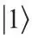
和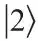
的“暗”叠加态，这使得介质对共振探测脉冲是透明的。b，我们施加一个直径2.2 mm的σ－偏振耦合激光，频率与|3S，F=2，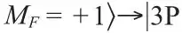
，F=2，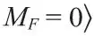
态的跃迁共振，还施加一个同向传播的，1.2 mm直径，频率调谐至|3S，F=1，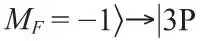
，F=2，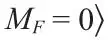
跃迁的σ+偏振探测激光。两激光束以正交的线性偏振方向发出（双箭头和实心圆分别代表探测和耦合光束的偏振方向）。它们通过分束器合成，经四分之一（λ / 4）波片形成圆偏振，然后射入原子云。从原子云中射出后，激光束又经过四分之一（λ / 4）波片，在被偏振分束立方体分离之前重获原来各自的线偏振态。原子云首先成像在一外置的成像平面，然后成像在CCD（电荷耦合器件）摄像机上。一针孔被置于外置的成像平面上，位于云图像的中心。通过针孔和翻转镜的适当摆放，只有通过了云中心区域的探测和耦合激光光束被采集并且同时由两个光电倍增管（PMT）监测。量子态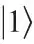
和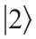
有相同的一阶塞曼位移，所以双光子共振在被捕获的原子云中保持下来。冷原子和同向传播的激光消除了多普勒效应。但是，在这种情况下，由于存在到量子态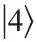
的非共振跃迁，光脉冲无法获得理想的透射率。 英文
原子制备（磁阱捕获）时处于一特定的内量子态
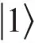
（图1a）。原子云最初受一耦合激光辐射，与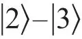
跃迁共振。只有耦合激光开启，并且所有的原子都处于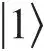
态时，系统处于暗态中（等式（1）中Ωp=0）。一探测激光脉冲，被调谐至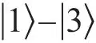
跃迁，与耦合激光同向传播，随后被发送穿过原子介质。在脉冲区域的原子被驱动至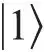
和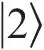
的暗叠加态，该叠加态由激光场的瞬时拉比频率的比率决定（等式（1））。 英文
耦合激光场的存在产生了透明现象，并导致探测脉冲的折射率图谱变得非常陡峭，群速度Vg变得很低[1-10]。当脉冲进入原子介质时，其空间尺寸被压缩了c / Vg倍，而在减速期间其峰值电子振幅保持恒定[4,7]。 英文
实验装置如参考文献4和11所述。图1给出了新的光学装置以及所涉及的原子能级。一典型的原子云包含1,100万钠原子，它被冷却至0.9 μK，刚好在玻色–爱因斯坦凝聚临界温度以上。原子云在z方向长339 μm，横向宽度55 μm，峰值密度为11 μm－3。选择同向传播的探测和耦合激光光束中通过原子云中心直径15 μm区域的部分，并用两个光电倍增管（PMT）同时监测。 英文
图2a给出了PMT探测到的典型信号。虚线表示耦合激光的测量强度，比探测脉冲早几微秒打开。空心圆为没有原子存在时（1 / e全宽为5.70 μs）所记录的高斯型参考探测脉冲。实心圆为探测脉冲通过一冷原子云后所测得的信号，实线为数据的高斯拟合。这个探测脉冲与参考脉冲相比的延迟为11.8 μs，对应群速度为28 m·s－1，相当于真空中速度的1 / 107。实验测得的延迟与理论预测值12.2 μs相符合。该理论预测值是基于测量所得的耦合拉比频率Ωc（2.57 MHz×2π）以及观测所得的原子柱密度（3,670 μm－2）获得的。 英文
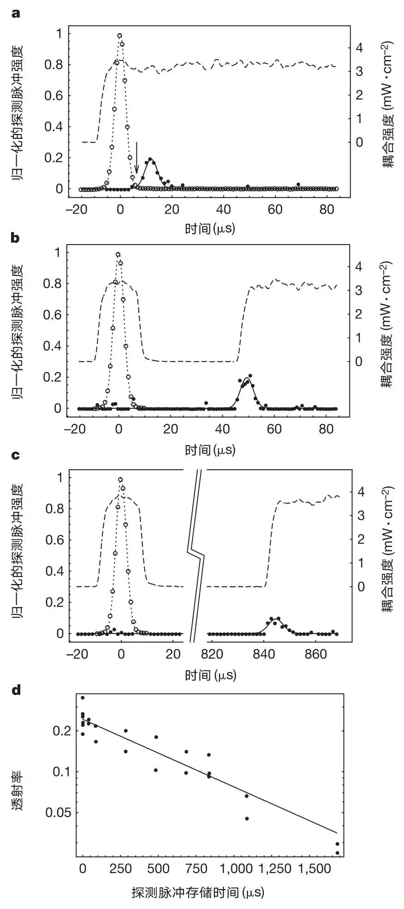
图2．探测脉冲延迟和再生的测量。空心圆（高斯拟合用点线表示）对应参考脉冲，为没有原子时所记录的100个探测脉冲的平均值。虚线和实心圆（高斯拟合用实线表示）对应在EIT条件下同时测量耦合和探测脉冲经由339 μm长，降温至0.9 μK的原子云传播所得到的强度。测量所得的探测强度相对参考脉冲的峰值强度进行了归一化（一般地，峰值处的Ωp / Ωc=0.3）。a，探测脉冲延迟11.8 μs。6.3 μs处的箭头表示探测脉冲空间上被压缩并被完全包含在原子云中的时刻（参考脉冲的后沿与延迟脉冲的前沿之间的交叉点决定了脉冲尾部刚刚进入云而前沿又恰好要离开的时刻）。b，c，耦合场在t=6.3 μs关闭，又分别在t=44.3 μs和t=839.3 μs重新开启之后探测脉冲的再生。在耦合激光关闭的时间间隔期间内，探测脉冲所携带的相干信息就存储在原子介质中。随着耦合场再次开启，探测脉冲通过相干激励再次产生。探测和耦合PMT放大器的时间常数分别为0.3 μs和3 μs。根据快速光电二极管的测量，耦合场的实际开启/关闭时间为1 μs。d，测量所得的探测脉冲能量透射率与存储时间的关系。实线是对数据进行的拟合结果，给出了对于原子相干的1 / e衰减时间0.9 ms。 英文
当时间t=6.3 μs时，如图2a中的箭头所示，探测脉冲空间上被压缩并被完全包含在原子云中。这个探测脉冲在自由空间中长3.4 km，在其中心15 μm直径范围内含有27,000个光子。为了与云尺寸（339 μm）相匹配，它在原子介质中被压缩，且探测场所剩余的光能仅为自由空间光子的1 / 400。实质上来讲几乎所有的探测能量都通过受激辐射被转移至耦合激光场和原子介质，而相干光学信息也被印记于原子之上（等式（1））。 英文
为了存储这些相干信息，当探测脉冲刚好被原子云包含时我们突然关闭耦合场。所存储的信息在随后耦合激光开启时被读取出来。图2b给出了一结果图。虚线显示耦合激光在t=6.3 μs时关闭，随后在44.3 μs时开启。实心圆表示测得的探测强度。从这些数据中可以看出，当耦合激光再一次被开启时探测脉冲也再次产生，也就是说我们可以停止并控制探测脉冲的再生。类似的现象已经被近期的理论文章所预测[12]。 英文
当探测脉冲被包含在介质中，激光场的相干信息已经被印记在原子上。当耦合激光关闭时，探测场被耗尽以保持暗态（等式（1）），而（可忽略的）原子振幅通过两光场间的受激光子交换从
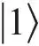
态转移到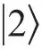
态。如上所述，由于被压缩的探测脉冲剩余的能量相当低，在原子布居振幅发生可观的改变之前，能量已经完全被耗尽。当耦合激光被重新开启时，逆过程发生，探测脉冲通过受激辐射到探测场而再生。随后探测脉冲在EIT条件下传播，就像耦合光束从未被关闭一样。 英文
在存储时间内，探测场的振幅信息包含在定义原子暗态的布居振幅之中。探测场的模式矢量信息包含在宏观样本中不同原子间的相对相位之中。冷原子的运用使热运动降至最低，也就使存储过程中相应的相对相位拖尾效应达到最小。（我们获得存储时间最长达到一个原子通过一个激光波长所需时间的50倍。通过等式（1）可以得出，两激光场波矢的差决定了印记在介质中的周期性相位图样的波长，该波长是单个激光波长的105倍。） 英文
图2b中的再生探测脉冲与图2a中所示的“正常”EIT脉冲波形相同。图2c显示了光学相干信息在被耦合激光读取前，存储在原子介质中超过800 μs的情况。这里的再生探测脉冲振幅与图2b相比有所降低。图2d为测量所得的一系列脉冲在原子云中的透射率与存储时间的函数关系图。这些数据给出了0.9 ms的1 / e衰减时间，与计算所得的在密度为11 μm－3的原子云中弹性碰撞的平均自由时间0.5 ms相当。关于退相干机制的进一步研究正在计划中，但不在本文讨论范围之内。 英文
我们已经在实验上验证了探测脉冲的再生是由于受激辐射而非自发辐射。为了实现这个目的，我们准备了所有原子处于
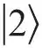
的态，随后单独开启耦合激光。耦合激光在几十个毫秒内被完全吸收，但没有在PMT上产生任何信号。 英文
图3a~3c显示了在相似条件下记录的三种PMT信号轨迹，不同之处在于我们改变了当耦合激光再次开启时的强度Ic2。当Ic2比最初的耦合强度Ic1大时，再生的探测脉冲振幅增大，其时间宽度减小（图3a）。对于Ic2<Ic1，情况相反（图3c）。这些结果支持我们为整个过程建立的物理图像。存储的原子相干信息限定了耦合与再生探测场的拉比频率比率，以及再生脉冲的空间宽度。在图3d中，当Ic2很大时，再生的探测脉冲峰值强度超过初始输入脉冲的40%。 英文
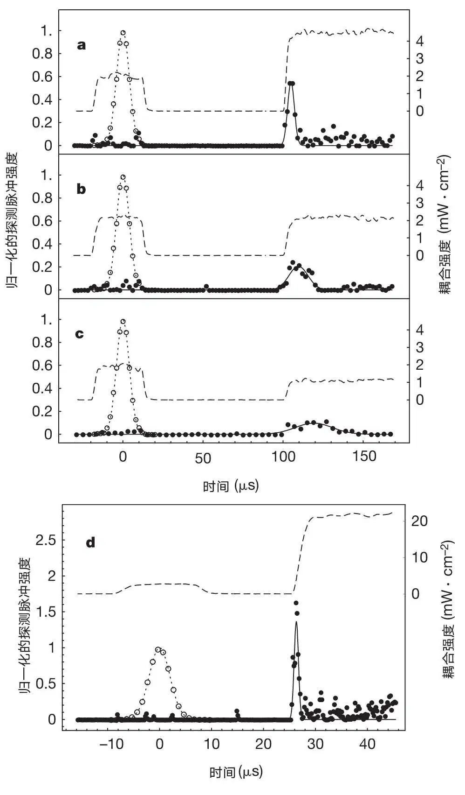
图3．不同的第二耦合脉冲强度（Ic2）下再生探测脉冲的测量。第一耦合脉冲强度（Ic1）保持恒定。a~c，记录的是分别对应Ic2 / Ic1之比为2，1以及0.5的图形。一系列数据表明，再生脉冲的高度、时间宽度的倒数均与Ic2成正比。观察到的现象与我们的物理图像相一致。由于原子相干限定了耦合和再生探测场的拉比频率之比（等式（1）），再生探测脉冲的强度与耦合激光再次开启时的强度成正比。另外，再生脉冲的空间宽度由原子相干的分布决定，因此与最初被压缩的脉冲的空间范围相同。EIT条件下探测脉冲的群速度与耦合强度成正比[4,7]。对于更大（或更小）的Ic2，再生探测脉冲获得了按比例更大（或更小）的群速度，从而导致其时间宽度与Ic2成反比。图d显示再生的探测脉冲强度可以超过初始输入脉冲的强度，图中所示情况超过了40%。（观察到的激光强度的峰–峰波动在10%以内。）再生探测脉冲的能量在所有a~d图中相同，这是由于在所有四种情况下，处于量子态
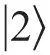
的原子（可用于将光子激发到探测场中）的总存储振幅相等。线和符号所对应的含义与图2一致。 英文
无耗散的脉冲存储和再生过程只有在耗散率和相干保持事件率之比很小时才可能实现。当耦合场的增大或减小与探测脉冲的持续时间（τ）相比很迅速，而与1 / Γ相比变化缓慢时，这个比值等于（扎卡里·达顿和莱娜·韦斯特戈·豪，稿件准备中）
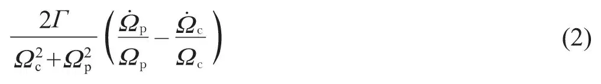
这里Γ为态
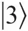
的自发衰减率。我们的数值模拟显示，探测场一直通过使等式（2）的括号内项几乎相消的方式不断调节至与耦合场变化相匹配[13,14]。甚至对于关闭时间小于1/Γ的情况，我们也可以证明，只要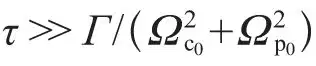
，态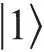
和的相干就不存在衰减；这里Ωc0和Ωp0为在耦合激光关闭前的拉比频率。（文献12中提到的对于非耗散行为所必需的绝热要求太过严格。这个条件在低耦合激光电源开启和关闭时就不可避免地被破坏。） 英文
本文实验论证了相干光学信息可以被存储在原子介质中，并随后在磁阱捕获的冷原子云中利用EIT效应读取出来。本文通过实验验证了存储和读取过程是由两激光场之间的受激光子转移来控制的。应用一系列短耦合激光脉冲可以实现多重读取。图4a和4b显示了间隔高达几百个毫秒的二重和三重读取的测量结果。每个再生的探测脉冲包含“原子内存”的部分内容，而对于本实验所选择的参数，内存在第二和第三个脉冲之后被耗尽。 英文
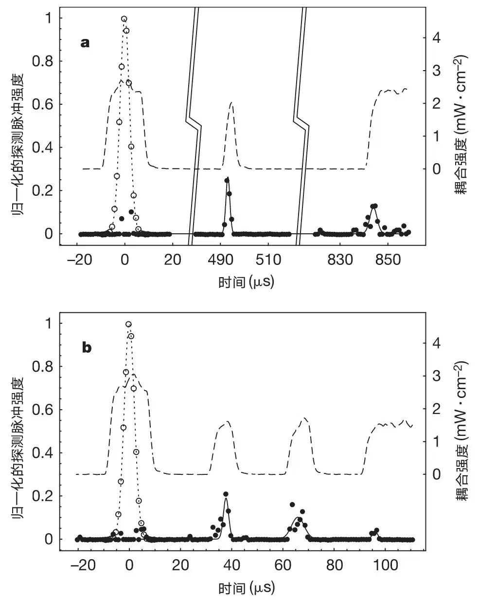
图4．原子内存的二重和三重读取测量。为了耗尽这些情况下的原子内存，我们使用了二重（a）和三重（b）短耦合脉冲。二（三）重再生探测脉冲的总能量与具有单一长耦合激光脉冲的单再生探测脉冲（图2和3中使用的脉冲）的能量相等。线和符号所对应的含义与图2一致。 英文
我们相信该系统可以应用于量子信息传递；例如，用于定态量子比特和飞行量子比特的互相转换[15]。通过注入多重探测脉冲至玻色–爱因斯坦凝聚体（我们预计此条件下多数原子碰撞是可以相干保留的）并运用受控制的原子–原子之间的相互作用，量子信息处理在存储时间之内或许是可能的。 英文
（崔宁 翻译；石锦卫 审稿）